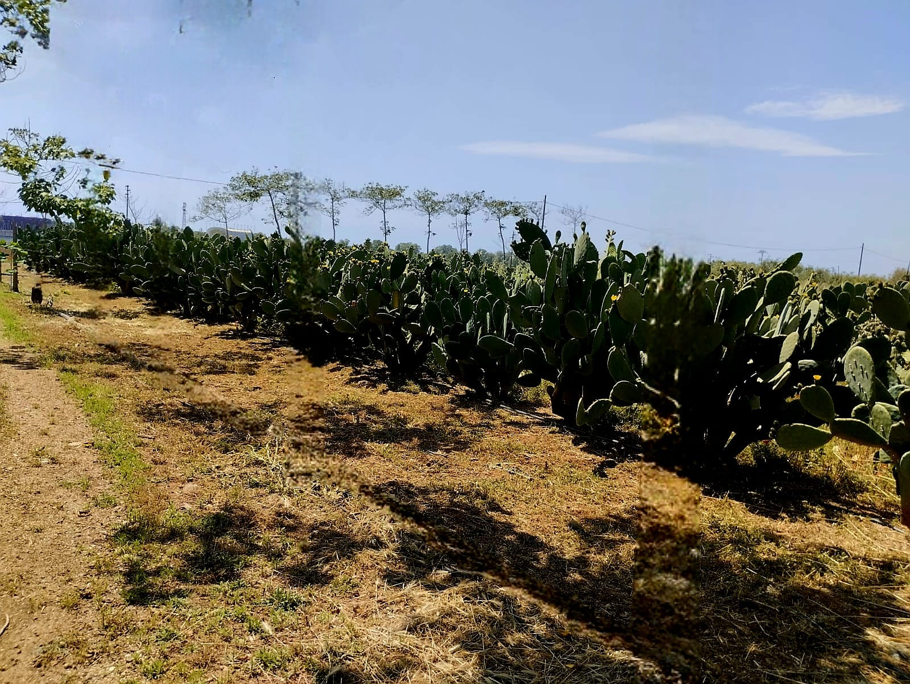

La Struttura Vivaistica
Impianti moderni, coltivazioni biologiche e naturali e un sistema di gestione che garantisce qualità, tracciabilità e continuità di fornitura.

🌵 Coltivazioni Biologiche
Coltiviamo con metodi naturali e biologici, rispettando la biodiversità e offrendo un prodotto sano, forte e altamente performante sia per il vivaismo che per il biogas.

🏷️ Materiale Certificato
Tutte le piantine vengono prodotte e commercializzate con passaporto fitosanitario ufficiale, nel rispetto delle normative europee sulla qualità del materiale vegetale.

🌍 Terreni Pugliesi
Le nostre piantagioni si trovano in Puglia, in un contesto climatico ideale per il Fico d'India: clima mediterraneo, terreni ben drenati e alta insolazione.

📦 Logistica e Fornitura
Sistema organizzato di raccolta, selezione e consegna del materiale vivaistico. Fornitura programmata con contratti a prezzi fissi per garantire continuità agli acquirenti.